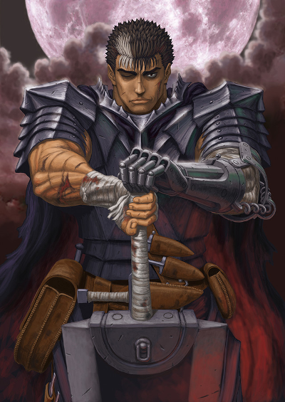
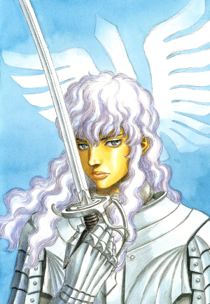
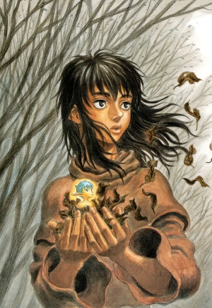
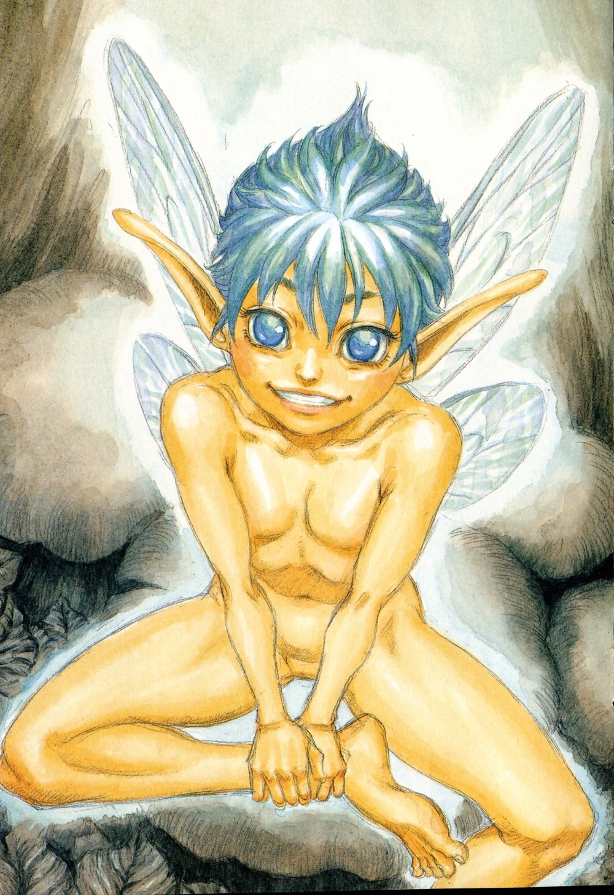
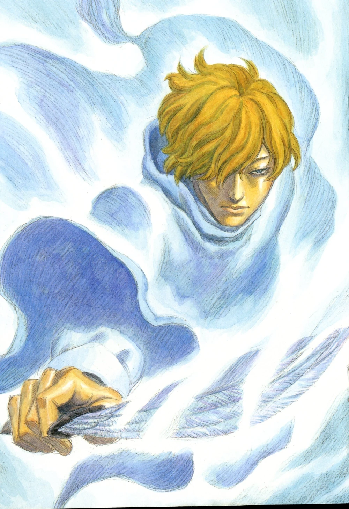

L'Âge d'Or
Plongez dans l'univers sombre et épique de Berserk, le chef-d'œuvre de Kentaro Miura qui a marqué l'histoire du manga dark fantasy.
Berserk est un manga seinen écrit et dessiné par Kentaro Miura, publié depuis 1989.
L'œuvre suit Guts, un mercenaire solitaire marqué par un destin tragique, dans sa quête
de vengeance contre les forces démoniaques.
Guts

L'Épéiste Noir, un guerrier maudit portant la Marque du Sacrifice et brandissant l'épée Dragon Slayer.

Griffith
Le Faucon Blanc, chef de la Brigade du Faucon.

Casca
Guerrière de la Brigade, compagne de Guts.

Puck
Petit elfe fidèle compagnon de Guts.

Schierke
Jeune sorcière aux pouvoirs magiques.

Serpico
Escrimeur agile, protecteur de Farnese.

Farnese
Noble ancienne chef des Chevaliers du Fer.